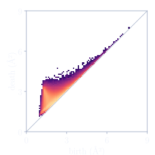
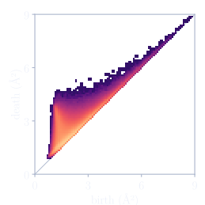
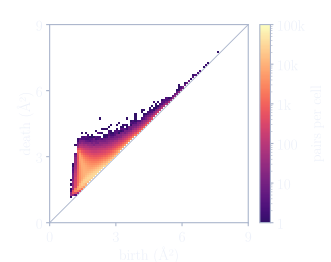
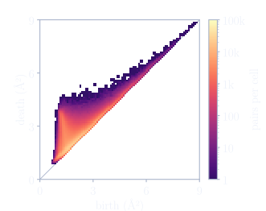
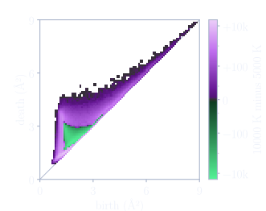
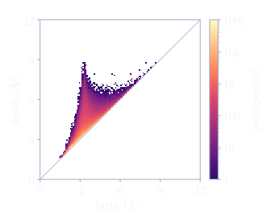
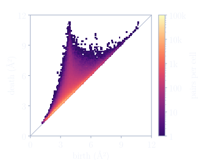
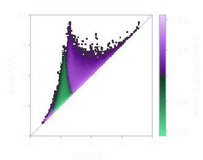

Persistent homology of a simulated liquid metal: reading million-point diagrams, and why stability shapes them.
Fabiana Ferracina · Tohoku University
5000 K
10000 K


Persistence diagrams of loops (H1) in two 500,000-atom snapshots of liquid copper, below and above the Frenkel line. Axes: birth and death, Ų; brighter means more pairs, on a log scale.
The problem
Viscosity turns around near 8000 K
Simulated liquid copper at 10 GPa. The viscosity η falls from 4.9 to 0.68 mPa·s, then rises again to about 0.95.
Frenkel line: where atomic motion turns from liquid-like (vibrate in a cage of neighbors, then hop) to gas-like (free flight between collisions). Here it is predicted near 8000 K, independently of these data.
The line is defined by motion. Does the point cloud of atom positions change across it, and can persistent homology tell?
η (mPa·s), 95% CI
0
1
2
3
4
5
2000
4000
6000
8000
10000
12000 K
Frenkel line ≈ 8000 K
Data: F. Ferracina, A. K. A. Lu, X. N. Du, N. Chen, M. I. Ojovan, H. Suito, D. V. Louzguine-Luzgin, “Viscosity rise of supercritical liquid copper above the Frenkel line and related structural features: a molecular dynamics and topological data analysis study”, J. Phys.: Condens. Matter (2026), Table 1. Green-Kubo viscosity, 95% CI. Green: below the Frenkel line; violet: 8000 K and above. Frenkel line: Brazhkin et al., Phys. Rev. E85, 031203 (2012).
The problem · what transport theory explains
Activated flow locates the minimum, and stops there
Liquid-like points: one straight line
To flow, an atom must escape its cage of neighbors, at an energy cost Ea. Then η ∝ exp(Ea/RT), a straight line in this plot with slope Ea/R.
We fit all the points below the minimum, 2000 to 7000 K: Ea = 32 kJ/mol (experiment, ambient pressure: 30.5).
Gas-like points: off the line
From 8000 K the points leave the line: escaping a cage no longer limits the flow.
The Eyring–Kaptay model turns Ea into a predicted minimum, Tvm = 2Ea/R ≈ 7700 K (7340 K with the experimental Ea), close to the observed 8000 K. It says nothing about how the atoms are arranged.
Green–Kubo viscosity at 10 GPa; bars: 95% CI. Line: unweighted least-squares fit of ln η against 1/T over 2000–7000 K (R² = 0.98), dashed where extrapolated. Tvm = 2Ea/R: Ojovan and Louzguine-Luzgin, Materials17, 1822 (2024).
Background · structure in a liquid
Order at two scales: clusters, and the rings between them
Short-range order
An atom and its nearest neighbors, about 2.5 Å away. A common local shape in metallic liquids is the icosahedron: 12 points around a center. It packs well but cannot tile space, so it is not a crystal.
Medium-range order
How those clusters share atoms over the next few neighbor shells (about 4 to 10 Å). The gaps between clusters are bounded by rings of about a dozen atoms (orange).
For us
About 500,000 points in a flat 3-torus, one cloud per temperature.
The nearest-neighbor distance a ≈ 2.5 Å is the unit of length.
Question: which of these scales change with temperature?
Data and filtration
From 500,000 atoms to two persistence diagrams
Simulation
Molecular dynamics of copper at 10 GPa; 11 temperatures, 2000 to 12000 K; one 500,000-atom snapshot each, in a periodic box
Alpha filtration
Periodic Delaunay complex filtered by radius (HomCloud); birth and death recorded as squared radii r², in Ų
Diagrams
Dgm1 (loops) and Dgm2 (voids): about 106 points each, binned on a 3/32 Ų grid
Summaries
Counts by lifetime, entropy, distances between diagrams, representative cycles
Why alpha rather than Vietoris–Rips. The alpha complex is the nerve of the balls clipped to their Voronoi cells, so it is homotopy equivalent to the union of balls at every radius, it lives inside the Delaunay triangulation, and it stays small at half a million points. Rips at this size would be enormous and only approximates the union.
Periodic boundaries are built in, so the point cloud is a sample of a flat 3-torus with no edge effects.
LAMMPS, embedded-atom potential (Mendelev–King), NPT. Diagram sizes at 5000 K: 1.86×106 points (H1) and 9.5×105 (H2). HomCloud 4.6.
Why persistent homology
Classical descriptors flatten out; diagrams keep the information
Classical structure descriptors
≥ 99.98%
of atoms match no template in common-neighbor analysis, at every temperature. A per-atom label that is constant cannot track a change.
g(r)
the pair correlation is a function of one distance. It averages over angles: a ring of atoms and the cavity it bounds are not told apart.
What persistence adds
stable
Dgm is 1-Lipschitz in the input: a δ-perturbation of the atoms moves each radius by at most δ. Thermal noise has a controlled effect.
graded
by homological degree (H1 loops, H2 voids) and by scale (birth, death): about 106 points per snapshot, no cutoff to choose.
invertible
a volume-optimal cycle maps a diagram point back to the atoms that bound it.
So the rest of the talk reads the diagrams rather than reducing them to one score.
Adaptive common-neighbor analysis (OVITO) on the raw 500,000-atom snapshots. Stability in radius: bottleneck distance ≤ δ when every point moves by at most δ. Volume-optimal cycles: Obayashi, SIAM J. Appl. Algebra Geom.2, 508–534 (2018).
Filtration scale
Density is a change of filtration scale, and it can be divided out
An alpha filtration commutes with dilation: scaling the points by λ scales every birth and death (squared radii) by λ2.
Density ρ sets the length scale, ρ−1/3. So b·ρ2/3 and d·ρ2/3 are scale-free coordinates.
From 5000 to 10000 K the density falls 24%, which alone stretches every squared radius by 20%.
In scale-free coordinates, liquids at every temperature and ideal crystals share one plane, with no reference density to choose.
Dgm(λX) = λ2 · Dgm(X)
(b, d) ↦ (b ρ2/3, d ρ2/3)
(ρ5000/ρ10000)2/3 = (0.0699/0.0530)2/3 = 1.20
Squared alpha radii in Ų, HomCloud 4.6. Density in atoms/ų from the NPT runs at 10 GPa.
Summaries
What we compute from each diagram
Lifetime bands, per atom
Split Dgm by persistence d − b into short, middle and long (H1: cuts at 0.3 and 1.0 Ų; H2: 0.15 and 0.7). Count pairs in each band and divide by the number of atoms.
Occupied cells N, entropy S
Bin Dgm on the 3/32 Ų grid. N is the number of occupied (b, d) cells; S = −Σ pi ln pi over their normalized multiplicities.
S = ln N − KL(p ‖ uniform), so S ≤ ln N.
Distances between diagrams
Sliced Wasserstein between diagrams at neighboring temperatures. Total variation between normalized histograms, to match the liquid against reference diagrams.
Representative cycles
Volume-optimal cycle of a pair: the minimal chain that realizes it. It gives the atoms behind a point, their number, and their spread (radius of gyration Rg).
All births and deaths rescaled to the 5000 K density before any comparison. Bands and grid as in the paper; cycles from HomCloud 4.6 (Obayashi 2018).
Statistics from one box
Error bars from a single snapshot by localizing the diagram
Tile the periodic box into K³ cubes. Filter each cube together with a shell of its neighbors, and keep only the pairs whose birth simplex lies inside the cube.
The cubes partition the diagram without double counting: 64 cubes of about 7,800 atoms, or 512 of about 1,000.
Result: cube-to-cube spread is small compared with the change per 1000 K. A linear classifier on per-cube Betti curves separates the cubes below and above any split temperature at 98 to 100% accuracy.
Birth positions from HomCloud; padding 6 Å; K = 4 and 8 give the same picture.
Real diagrams · H1 loops
Copper’s own loops, 5000 K against 10000 K
5000 K

10000 K

Difference

Axes: birth and death in Ų, at the 5000 K density. Color: pairs per cell, log scale, the same for both temperatures; one square per histogram cell, unsmoothed. Right: violet where 10000 K has more, green where it has less.
Loops with lifetime 0.25 to 1 Ų: −32%; 1 to 2 Ų: −20%; above 2 Ų: 856 → 23,118 points (×27). Near the diagonal (under 0.25 Ų) the count is unchanged to within −8%, below the resolution of the grid.
Real diagrams · H2 voids
The same two snapshots, for voids
5000 K

10000 K

Difference

All points shown. At 5000 K the long-lived voids form a narrow ridge at birth ≈ 3.3 Ų, reaching death ≈ 8.7. At 10000 K the ridge is about twice as wide, sits near birth 4 and reaches death ≈ 11.
Voids thin out, 990,000 → 760,000 points. The lower lifetime bands lose 22 to 31% (the near-diagonal band depends on the grid); lifetimes above 2 Ų: 11,255 → 13,230 (+18%).
Real loops and voids · interactive
A diagram point is a loop in the atom box
Left: 80 random points of the diagram of a 100,000-atom sub-box of the snapshot; rings mark the three shown examples. Right: that point’s optimal cycle (green at 5000 K, violet at 10000 K) among the nearby atoms of the real snapshot. Click a button or a point; drag the atoms to rotate.
Inverse analysis · which atoms are behind the points
Cycles keep their shape; some populations thin out
Band
Boundary atoms
Rg (Å) at 5000, 8000, 10000 K
Pairs per atom, 5000 → 10000 K
Loops (H1)
Short
3
1.52, 1.42, 1.39
2.03 → 1.95 (−4%)
Middle
4
1.62, 1.60, 1.64
1.42 → 0.93 (−34%)
Long
9 to 13
3.30, 2.64, 2.94
0.357 → 0.332 (−7%)
Voids (H2)
Short
4
1.73, 1.76, 1.83
1.04 → 0.89 (−14%)
Middle
5 to 6
1.96, 1.98, 1.98
0.77 → 0.50 (−36%)
Long
13 to 14
2.75, 2.74, 3.02
0.173 → 0.135 (−22%)
Looking at the atoms: the 4-atom rings thin out (−34%) and the long H2 voids decline (−20 to −24% for any band cut); the 9-to-13-atom H1 rings change little, −16% to +8% depending on the cut.
Volume-optimal cycles of 60 sampled pairs per band. The typical cycle in each band has the same number of boundary atoms and a similar radius (Rg within 10 to 20%) at the three temperatures; what changes is how many cycles exist.
HomCloud 4.6 optimal volumes, 100,000-atom periodic cubes rescaled to the 5000 K density; pairs per atom are whole-box values from the band slide that follows. Medians. Optimal cycles: Obayashi, SIAM J. Appl. Algebra Geom.2, 508–534 (2018).
Structure across the Frenkel line
Loops and voids disagree: every void band thins out, long loops have no robust trend
Short-lived loops, 3 atoms: 2.01 to 1.92 per atom; within ±15% for any band cut.
Middle-lived loops, 4 atoms: 2.31 to 0.83, down 64%. 60% of that loss happens below 5000 K.
Long-lived loops, 9 to 13 atoms across a second shell, 0.29 to 0.36 per atom at these cuts, with no step at the minimum. Their trend is not robust: moving the cut by ±20% flips its sign.
The voids are robust: H2 short, middle and long fall 36%, 66% and 41%, and every band falls under every cut. The medium-range cavities thin out while the rings show no consistent change — a statement only a dimension-resolved summary can make.
H1 pairs per atom by lifetime band, one 500,000-atom frame per temperature, lifetimes rescaled to the 5000 K density. Bands: short < 0.3, middle 0.3 to 1.0, long > 1.0 Ų. Atom counts from the inverse analysis. H2 voids (bands 0.15 and 0.7 Ų), 2000 to 12000 K: short −36%, middle −66%, long −41%. Each cut moved by ±20%: middle H1 and all H2 trends keep their sign; short and long H1 do not.
Entropy of the diagram
Entropy tracks the logarithm of the occupied scales
On a ln N axis, S = ln N − KL. Over 2000 to 12000 K, H1 gives S = 0.85 ln N − 0.41 (R² = 0.999); H2 gives slope 0.86. Coarsening or shifting the grid moves the H1 slope within 0.83 to 0.93.
5000 to 10000 K: ΔS = +0.72 while Δ ln N = +0.80. The KL term moves by 0.08.
At matched density ΔS = +0.31 (+6%) for H1 and +0.42 (+8%) for H2: the broadening is real and smaller than the raw number.
S: Shannon entropy of the bin multiplicities (natural log). N: occupied (birth, death) bins on the 3/32 Ų grid. H1 shown; H2 gives the same slope. Diagrams recomputed from the raw coordinates with one pipeline (N = 660 to 1470 for H1, 5000 to 10000 K). The published tables give N = 733 to 1651: ΔS is the same 0.72 and Δ ln N is 0.81.
Null models · matched density
In H1, copper drifts toward hard spheres
Read it as a trajectory: as the liquid becomes gas-like, its topology moves smoothly toward the hard-sphere reference, with no step at the Frenkel line.
Occupied cells of the diagram per 20,000-atom cube (fewer points than the whole box, so fewer cells than on the entropy slide), mean of 8 cubes per point (sd ≤ 3%), lengths rescaled to the 5000 K density. Hard spheres: random points with minimum separation 0.8 of the Cu nearest-neighbor distance. Dashed: 8000 K. H1: Cu is 41% below hard spheres at 2000 K, 5% below at 12000 K; H2: Cu crosses them near 9000 K.
Reading a diagram
A dictionary: each crystal writes its own points
Dots are loops (H1), squares are voids (H2); crystallographers call a void a hole. a is the nearest-neighbor distance.
In 3D the same growth fills the gap among 4 atoms at 3a²/8 and the gap among 6 at a²/2. The octahedral hole lasts longest: the close-packing signature.
Exact values, checked numerically (periodic alpha filtrations of ideal FCC, HCP and BCC, and alpha filtrations of finite 13-, 55- and 147-atom Mackay icosahedra). BCC in units of its first-shell distance; its second-shell loop (orange dot) coincides with the tetrahedral hole. HCP coincides with FCC.
Stability · why a hot liquid looks the way it does
Stability meets Lindemann: why fingerprints merge
|Δ r²| ≤ 2rδ + δ²
filtration in radius is 1-Lipschitz, so in r² a point moves at most this far when atoms move by δ
At δ = 0.1a and r ≈ 0.65a the bound is about 0.14a², about the same as the gap between tetrahedral and octahedral deaths, 0.125a².
Lindemann’s rule: a crystal melts when the rms vibration reaches 10 to 15% of a. The bound keeps the two holes apart only below about 0.05a, smaller than that. Numerically the octahedral signature falls from 33% of voids to 11% at 0.05a, and to a 3% floor by 0.10a.
A perturbation theorem and an empirical melting criterion land on the same scale. That is why a hot liquid’s diagram cannot name its crystal — and why it can still change smoothly and measurably.
FCC with Gaussian displacements (σ per Cartesian component), periodic alpha filtration. 'Octahedral signature' = death/birth above 1.3 (ideal: 1.5 octahedral, 1.125 tetrahedral). 2048 atoms, 5 seeds. Lindemann 3D rms 0.10–0.15 = 0.06–0.09 per axis.
The liquid in the dictionary
The liquid reads as a crystal blurred past the Lindemann scale
For each temperature, find the noisy crystal whose diagram is closest to the liquid's (loops, scale-free units).
The matching displacement grows steadily, 0.07a to at least 0.20a (σ per axis; 0.20a is the top of the tested grid). FCC, HCP and BCC fit about equally well, within 0.04 in distance; from 4000 K a 147-atom icosahedron fits as well.
Adaptive common-neighbor analysis labels at least 99.98% of atoms 'other' at every temperature. The diagrams still resolve a smooth, systematic change.
Total-variation distance between normalized scale-free H1 diagrams; references at displacements 0 to 0.20a. CNA and Voronoi analysis with OVITO on the same 500,000-atom snapshots.
Removing the noise
Quenching lowers the noise level; the ordered atoms that appear are icosahedral
Energy minimization removes the vibrations. At 2000 K the quenched diagram matches a crystal with half the blur, 0.03a instead of 0.07a.
Atoms at the center of
snapshot
quenched
a full icosahedron, 2000 K
0.45%
5.0%
a full icosahedron, 5000 K
0.05%
6.4%
a full icosahedron, 12000 K
0.01%
6.0%
a crystal site, 2000 K
0.01%
0.5%
The ordered atoms that appear are icosahedral rather than crystalline: 5 to 6.4% against 0.5% or less.
Inherent structures: FIRE minimization at fixed box, Mendelev–King EAM. Icosahedra: Voronoi index ⟨0,0,12,0⟩ (includes distorted ones); crystals: adaptive CNA (OVITO). Effective displacement: nearest noisy FCC reference, H1, scale-free units.
Take-away
The diagrams change steadily through the viscosity minimum
The problem
Viscosity has a minimum near 8000 K, where the Frenkel line is predicted. Transport theory locates it; it says nothing about the atoms.
Small cycles
First-shell triangles change little; 4-atom rings fall by about 60%, mostly below 5000 K, whatever the band cut.
Large cycles
Long voids thin out (−20 to −24%, 5000 → 10000 K, any band cut); rings of 9 to 13 atoms change little. Cycles keep their shape; their numbers change.
Reading
No step at 8000 K. Thermal noise sits at the scale where crystal fingerprints merge, so the diagram cannot name a crystal, yet it moves smoothly and measurably.
Looking ahead
Future work
1 · Limit theory, in practice
Laws of large numbers exist for diagrams of stationary point processes (Hiraoka, Shirai and Trinh 2018); central limit theorems hold for Poisson input and some weakly dependent models (Krebs 2021). A million-point liquid snapshot, cut into cubes, is a testbed for the correlated case.
2 · Stability for random noise
|Δr²| ≤ 2rδ + δ² uses the largest displacement. Wasserstein stability (Skraba and Turner 2020) uses the ℓp size of all displacements, closer to thermal noise. Can it predict the octahedral signature decay, 33% → 11% → 3% over σ = 0 → 0.05a → 0.10a?
3 · Why slope 0.85?
The entropy of bin multiplicities satisfies S = 0.85 ln N − 0.41, R2 = 0.999, the same in H1 and H2 across 11 temperatures; coarsening or shifting the grid moves it within 0.83 to 0.93. Does it have a limit as the bin width goes to zero, and what sets it?
4 · Topology in time
The Frenkel line is defined by motion. Vineyards follow points of the diagram; zigzag persistence follows the generators across frames. Can a ring's lifetime be compared with the vibration period? That needs output finer than 0.1 ps.
Hiraoka, Shirai and Trinh, Ann. Appl. Probab.28 (2018); Krebs, Stoch. Proc. Appl.139 (2021); Skraba and Turner, arXiv:2006.16824; vineyards: Cohen-Steiner, Edelsbrunner and Morozov (2006); zigzag: Carlsson and de Silva (2010); time-varying data: Xian, Adams, Topaz and Ziegelmeier, arXiv:2010.05780. Closest relatives: Hiraoka et al., PNAS113 (2016); Obayashi, SIAM J. Appl. Algebra Geom.2 (2018).
Thank you
Scripts and diagrams are available on request.
fabiana@tohoku.ac.jp
F. Ferracina, A. K. A. Lu, X. N. Du, N. Chen, M. I. Ojovan, H. Suito, D. V. Louzguine-Luzgin, “Viscosity rise of supercritical liquid copper above the Frenkel line and related structural features: a molecular dynamics and topological data analysis study”, J. Phys.: Condens. Matter (2026).
Backup · Distance between diagrams
At matched density, H1 moves steadily and substantially
The box expands faster at high temperature, so the raw distance rises.
Rescaled to the same density, every 1000 K step moves the diagram measurably (0.038 to 0.022).
The displacement accumulates across the range rather than at 8000 K.
Sliced Wasserstein between adjacent-temperature H1 diagrams, one 500,000-atom frame per temperature. Lengths rescaled by (ρ/ρ₀)^(1/3).
Backup · Entropy and bin count
Entropy gain, apart from bin count
H1 entropy
+14.2%
H1 ÷ log n
+1.7%
H2 entropy
+14.7%
H2 ÷ log n
+3.4%
Change from 5000 to 10000 K. Bars are to scale.
Dim.
n
S
S ÷ log n
H1
733 → 1651
5.07 → 5.79
0.769 → 0.782
H2
1296 → 2838
4.98 → 5.72
0.696 → 0.719
This entropy is bounded by log n. Here n more than doubles, log n rises by about 0.8, and S rises by 0.72 to 0.74.
S is the entropy of bin multiplicities, and n counts occupied (b, d) bins on a 3/32 grid, so both depend on binning. Recomputed from the raw coordinates: S = 0.85 ln N − 0.41 across all 11 temperatures.
Source: Tables 2 and 3 of the paper; ratios computed from them.
Backup · Broadening at equal pair count
At equal pair count the diagram still broadens
2.2×
occupied bins at equal pair count, 5000 to 10000 K (H1: 687 to 1545; H2: 1183 to 2644)
50%
growth of the 99th percentile of persistence in H1 (1.69 to 2.53) and 45% in H2 (2.06 to 3.00)
0%
change in the median of weighted persistence in both dimensions (H1 0.28, H2 0.09): the bulk barely moves
The lifetime entropy of eq. 5 is flat (normalized: −0.9% in H1, −1.1% in H2): the change is a heavier tail, not a shifted bulk. Jensen–Shannon distance 0.10 (H1) and 0.14 (H2); sliced Wasserstein 0.39 and 0.89.
Raw diagrams, not density-matched; thinning removes the pair-count difference (200 draws). At matched density (8 cubes): bins +49%, 99th percentile +28% (H1); +39% and +22% (H2).
Backup · Density matching
Matching density before comparing
Issue
At constant pressure the box grows with T. Diagrams in ångström mix thermal expansion with topology.
Method
Rescale each snapshot to the 5000 K density. Recompute H1 and H2 with alpha filtrations of 8 cubes of 20,000 atoms at all 11 temperatures (one frame per temperature).
Criterion
A change counts if it exceeds the cube-to-cube spread and keeps its sign after rescaling.
Result, matched density, 8 cubes (H1 | H2): S ÷ log n +0.1% | +2.7% (spread 0.1–0.4 points): H1 is within the spread, H2 is several times it; weighted persistence +1% | +7%; occupied bins +49% | +39%; 99th percentile +28% | +22%
? keys · S speaker window · N notes · O overview · F full screen
00:00
00:00
Next
→ Space PageDown
next slide
← PageUp
previous slide
Home / End
first / last slide
digits
jump to that slide
S
speaker window (notes, next slide, timer) for a second screen